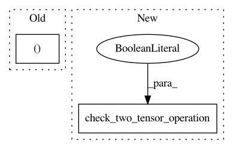

be6d8293f26d6d577b61874ccf6d68f116734d5a,tests/keras/backend/backend_test.py,TestBackend,test_depthwise_conv,#TestBackend#Any#Any#Any#Any#Any#,1045
Before Change
def test_depthwise_conv(self, op, input_shape, kernel_shape, padding, data_format):
k = K.backend()
_, x = parse_shape_or_val(input_shape)
_, w = parse_shape_or_val(kernel_shape)
y1 = KNP.depthwise_conv(x, w, padding, data_format)
y2 = check_two_tensor_operation(
op, x, w, [KTH if k == "theano" else KC if k == "cntk" else KTF],
After Change
("depthwise_conv2d", (1, 7, 6, 3), (3, 3, 3, 4), "same", "channels_last"),
])
def test_depthwise_conv(self, op, input_shape, kernel_shape, padding, data_format):
check_two_tensor_operation(
op, input_shape, kernel_shape, WITH_NP,
padding=padding, data_format=data_format,
cntk_dynamicity=True)
@pytest.mark.parametrize("op,input_shape,pool_size,strides,padding,data_format,pool_mode", [
("pool2d", (2, 3, 7, 7), (3, 3), (1, 1), "same", "channels_first", "avg"),
("pool2d", (3, 3, 8, 5), (2, 3), (1, 1), "valid", "channels_first", "max"),
In pattern: SUPERPATTERN
Frequency: 3
Non-data size: 2
Instances
Project Name: keras-team/keras
Commit Name: be6d8293f26d6d577b61874ccf6d68f116734d5a
Time: 2018-08-28
Author: me@taehoonlee.com
File Name: tests/keras/backend/backend_test.py
Class Name: TestBackend
Method Name: test_depthwise_conv
Project Name: keras-team/keras
Commit Name: b95fcf7f52aca8ad0b1afb3cfc64c8eed534fafe
Time: 2017-07-29
Author: me@taehoonlee.com
File Name: tests/keras/backend/backend_test.py
Class Name: TestBackend
Method Name: test_nn_operations
Project Name: keras-team/keras
Commit Name: be6d8293f26d6d577b61874ccf6d68f116734d5a
Time: 2018-08-28
Author: me@taehoonlee.com
File Name: tests/keras/backend/backend_test.py
Class Name: TestBackend
Method Name: test_conv